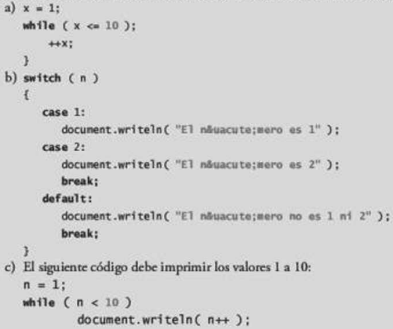

Encuentre el error en cada uno de los siguientes segmentos de código, y explique cómo corregirlo:
a) El error es el punto y coma (;) despues del while, para corregir esto es necesario quitar el punto y coma para poner una llave que abre.
b) El error es que falta una instracción break en el primer case, para corregir es necesario agregar el break en el case 1.
c) Error, se utiliza un operador relacional inadecuado en la condición de continuación del while. Para corregirlo se debe usar <= para que cambie el 10 a 11.